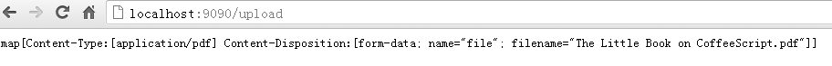

4.5 处理文件上传
你想处理一个由用户上传的文件，比如你正在建设一个类似Instagram的网站，你需要存储用户拍摄的照片。这种需求该如何实现呢？
要使表单能够上传文件，首先第一步就是要添加form的enctype属性，enctype属性有如下三种情况:
application/x-www-form-urlencoded 表示在发送前编码所有字符（默认）
multipart/form-data 不对字符编码。在使用包含文件上传控件的表单时，必须使用该值。
text/plain 空格转换为 "+" 加号，但不对特殊字符编码。
所以，表单的html代码应该类似于:
<html>
<head>
<title>上传文件</title>
</head>
<body>
<form enctype="multipart/form-data" action="http://127.0.0.1:9090/upload" method="post">
<input type="file" name="uploadfile" />
<input type="hidden" name="token" value="{{.}}"/>
<input type="submit" value="upload" />
</form>
</body>
</html>
在服务器端，我们增加一个handlerFunc:
http.HandleFunc("/upload", upload)
// 处理/upload 逻辑
func upload(w http.ResponseWriter, r *http.Request) {
fmt.Println("method:", r.Method) //获取请求的方法
if r.Method == "GET" {
crutime := time.Now().Unix()
h := md5.New()
io.WriteString(h, strconv.FormatInt(crutime, 10))
token := fmt.Sprintf("%x", h.Sum(nil))
t, _ := template.ParseFiles("upload.gtpl")
t.Execute(w, token)
} else {
r.ParseMultipartForm(32 << 20)
file, handler, err := r.FormFile("uploadfile")
if err != nil {
fmt.Println(err)
return
}
defer file.Close()
fmt.Fprintf(w, "%v", handler.Header)
f, err := os.OpenFile("./test/"+handler.Filename, os.O_WRONLY|os.O_CREATE, 0666)
if err != nil {
fmt.Println(err)
return
}
defer f.Close()
io.Copy(f, file)
}
}
通过上面的代码可以看到，处理文件上传我们需要调用r.ParseMultipartForm，里面的参数表示maxMemory，调用ParseMultipartForm之后，上传的文件存储在maxMemory大小的内存里面，如果文件大小超过了maxMemory，那么剩下的部分将存储在系统的临时文件中。我们可以通过r.FormFile获取上面的文件句柄，然后实例中使用了io.Copy来存储文件。
获取其他非文件字段信息的时候就不需要调用
r.ParseForm，因为在需要的时候Go自动会去调用。而且ParseMultipartForm调用一次之后，后面再次调用不会再有效果。
通过上面的实例我们可以看到我们上传文件主要三步处理：
- 表单中增加enctype="multipart/form-data"
- 服务端调用
r.ParseMultipartForm,把上传的文件存储在内存和临时文件中 - 使用
r.FormFile获取文件句柄，然后对文件进行存储等处理。
文件handler是multipart.FileHeader,里面存储了如下结构信息
type FileHeader struct {
Filename string
Header textproto.MIMEHeader
// contains filtered or unexported fields
}
我们通过上面的实例代码打印出来上传文件的信息如下

图4.5 打印文件上传后服务器端接受的信息
客户端上传文件
我们上面的例子演示了如何通过表单上传文件，然后在服务器端处理文件，其实Go支持模拟客户端表单功能支持文件上传，详细用法请看如下示例：
package main
import (
"bytes"
"fmt"
"io"
"io/ioutil"
"mime/multipart"
"net/http"
"os"
)
func postFile(filename string, targetUrl string) error {
bodyBuf := &bytes.Buffer{}
bodyWriter := multipart.NewWriter(bodyBuf)
//关键的一步操作
fileWriter, err := bodyWriter.CreateFormFile("uploadfile", filename)
if err != nil {
fmt.Println("error writing to buffer")
return err
}
//打开文件句柄操作
fh, err := os.Open(filename)
if err != nil {
fmt.Println("error opening file")
return err
}
defer fh.Close()
//iocopy
_, err = io.Copy(fileWriter, fh)
if err != nil {
return err
}
contentType := bodyWriter.FormDataContentType()
bodyWriter.Close()
resp, err := http.Post(targetUrl, contentType, bodyBuf)
if err != nil {
return err
}
defer resp.Body.Close()
resp_body, err := ioutil.ReadAll(resp.Body)
if err != nil {
return err
}
fmt.Println(resp.Status)
fmt.Println(string(resp_body))
return nil
}
// sample usage
func main() {
target_url := "http://localhost:9090/upload"
filename := "./astaxie.pdf"
postFile(filename, target_url)
}
上面的例子详细展示了客户端如何向服务器上传一个文件的例子，客户端通过multipart.Write把文件的文本流写入一个缓存中，然后调用http的Post方法把缓存传到服务器。
如果你还有其他普通字段例如username之类的需要同时写入，那么可以调用multipart的WriteField方法写很多其他类似的字段。